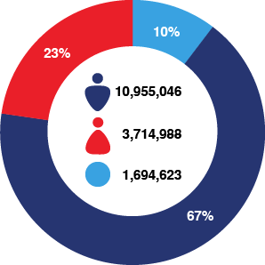
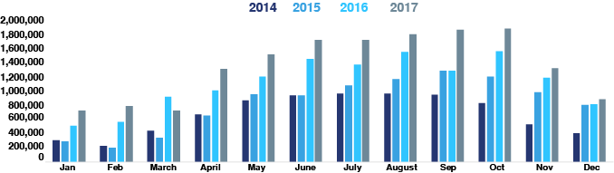
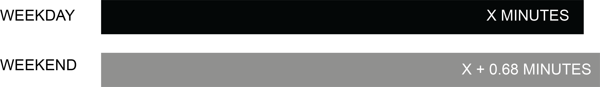

Currently, the majority of CitiBike riders consist of male riders accounting for 67% of the annual ridership. While female riders still enjoy a continuous yearly increase in ridership share, they are still less than half of the male riders.
While examining the data further, we’ve decided to further explore ridership by month. Not surprisingly, there are cyclical trends that correlate to the changing of the seasons as weather. Ridership is strong in the warmer months and dramatically fewer during the colder months. However, upon further exploration we’ve uncovered that the ridership growth within each respective month seem to have differing trends. Our project aims to visually present to what extent is CitiBike’s ridership affected by different types of variables such as gender and weather.

Male riders on average bike 2.3 minutes shorter than female riders
As a rider get older by 1 year, people on average bike 0.04 minutes longer.
When the temperature increases by 10 degrees F, the ride time increases by 0.02 minutes.
When people bike in the time between 11am to 4:59pm, they on average bike 0.7 minutes longer than the people who ride the time between 5am to 10:59am.
When people ride a citibike in the time between 5pm to 10:59 pm tend to bike 1.14 minutes longer than the people who ride the time between 5am to 10:59am.
Subscriber users on average bike 12.7 minutes less than customer riders.

Weekday riders on average bike 0.68 minutes shorter than weekend riders.